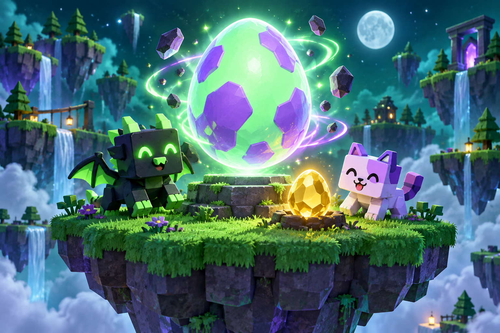

ROBLOX МИР ЯИЦ И ПИТОМЦЕВ
STEAL
AN EGG✦
Большое приключение
начинается с маленького яйца.
Собирай яйца. Открывай питомцев.
Развивай базу. И возвращайся за новой находкой.
01 / ЗНАКОМСТВО
Маленькая находка.
Большие планы.
Steal An Egg — игра в Roblox от and Collect Rare Pets. Здесь можно красть яйца у питомцев и других игроков, вылуплять питомцев и получать от них игровую валюту.
Потрать её на развитие базы и беговой дорожки. Тренируй скорость, знакомься с более редкими яйцами, размерами питомцев и мутациями.
02 / ТВОЙ ПЕРВЫЙ ЗАХОД
Освой базу.
Потом удивляй.
Четыре простых ориентира.
Открой карточку — начни с первого шага.
01СОБИРАЙНайди первое яйцо
Начни с доступной цели. Разберись, как двигаться и взаимодействовать с яйцами на своём устройстве, прежде чем отправляться дальше.
02ОТКРЫВАЙПознакомься с питомцем
Вылупляй яйца, чтобы получать питомцев. Они приносят игровую валюту — это основа для дальнейшего развития.
03УСКОРЯЙСЯПотренируй скорость
Беговая дорожка повышает Speed. Попробуй тренировку и посмотри, какие улучшения дорожки доступны тебе сейчас.
04УЛУЧШАЙРазвивай свою базу
В игре можно улучшать базу и дорожку. Перед покупкой прочитай, что именно изменится, и сравни стоимость со своей валютой.
Механики сверены с описанием автора в Roblox ↗ 13 сентября 2026 года. Порядок шагов — наш совет новичкам. Цены и баланс могут меняться.
03 / БЕЗ ЛИШНИХ ВОПРОСОВ
Перед тем,
как нырнуть в игру.
Всё важное для первого знакомства.
Можно играть с телефона?
Да. В описании игры заявлена поддержка телефонов, планшетов, компьютеров и консолей. Кнопка «В игру» откроет страницу Roblox.
Что дают питомцы?
Питомцы приносят игровую валюту. Также автор упоминает редких питомцев, разные размеры и мутации. Точные характеристики смотри внутри игры.
Здесь можно запустить саму игру?
Этот сайт — фан-гид. Для игры перейди в Roblox по кнопке: она ведёт на Steal An Egg от and Collect Rare Pets.
Почему здесь нет цен и таймеров?
Они могут меняться с обновлениями. Мы опираемся на описание автора и не показываем непроверенные цены, шансы выпадения или расписания.
СЛЕДУЮЩАЯ НАХОДКА — ТВОЯ
Ну что, за яйцом?
Первый шаг — открыть игру. Остальное узнаешь по пути.